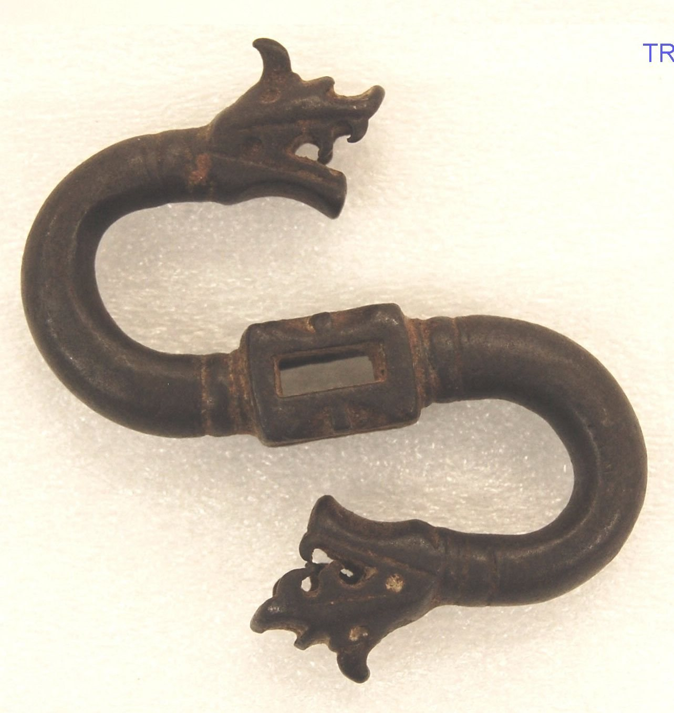

今日一句话总览
全球视觉艺术今天呈现出两条并行主线：一边是大型文化基础设施继续扩张、开馆与恢复（阿布扎比古根海姆、巴西新博物馆、熊本城修复），另一边是机构开始更认真地处理技术可信度、劳工伦理、心理健康与文化财产主权。生成式视觉工具已经从“能否创作”进入“谁来担责、怎样标识、如何验证”的阶段。
信息来源与检索范围
- 检索时间：2026-08-02 09:00—09:14（中国标准时间 CST，UTC+8）。
- 覆盖地区：东亚、东南亚、中东、欧洲、北美、拉丁美；兼顾全球性艺术市场、数字文化与文化遗产议题。
- 主要来源：The Art Newspaper、Artforum、Hyperallergic、ArtAsiaPacific、NPR、BBC、Reuters、Art Basel，以及大都会艺术博物馆、香港故宫文化博物馆、UCCA 等机构官网。
- 时间范围：重点为过去 24—72 小时（7 月 30 日—8 月 2 日）；为补足数字艺术、研究方法及已公布展期，少量扩展至过去 7 天，并在条目中注明。
- 访问失败 / 不确定项：ARTnews、Artforum 首页和 Hyperallergic 新闻索引曾出现超时，后改由 Google News RSS 定位并回到文章直链核验；The Met 页面脚本请求一度返回 429，随后通过浏览器正文成功核验；Reuters 原文出现 SSL 连接失败，Suno 案除保留 Reuters 直链外，另以转载其电讯内容的 Devdiscourse 交叉核验。部分展览由媒体报道而非主办方新闻稿，已明确标注。
开放图像说明
- 配图：《龙形带钩，15世纪》；The Metropolitan Museum of Art Open Access，Public Domain。
- 配图用于补充视觉艺术史与博物馆公共叙事，不是新闻事件现场照片。
一、必看头条（4 条）
1. 延宕二十年的阿布扎比古根海姆确定 12 月 11 日开馆
- 地区 / 机构：阿联酋阿布扎比 / Guggenheim Abu Dhabi、萨迪亚特岛文化区
- 来源：Hyperallergic
- 时间：2026-07-31
- 主题标签：#博物馆建筑 #中东 #劳工伦理 #全球化
- 事件摘要：由 Frank Gehry 设计、设有 30 个展厅的阿布扎比古根海姆宣布于 2026 年 12 月 11 日开放，收藏定位为“扎根地区、覆盖全球”，重点呈现 1960 年以来的实验艺术。报道同时重提 Gulf Labor Coalition 多年来对移民劳工待遇与劳动法规的质疑。
- 为什么重要：这不仅是一个新馆日期，而是全球博物馆品牌扩张、海湾文化资本与建设劳工伦理的一次集中检验。开馆叙事若只强调建筑奇观，会遮蔽文化基础设施如何被建成、由谁承担成本。
- 可延伸观察：开幕展艺术家是否回应当地与南亚劳工史；机构是否公开采购、用工与可持续数据；“区域中心”是否落实为策展权和收藏权，而非仅为地理标签。
2. 熊本 7.1 级地震再次损伤修复中的熊本城
- 地区 / 机构：日本九州熊本县 / 熊本城
- 来源：The Art Newspaper
- 时间：2026-07-31（地震发生于 7 月 28 日；报道亦称震中地区 7 月 29 日出现强震影响）
- 主题标签：#文化遗产 #灾害修复 #建筑保护
- 事件摘要：始建于 1607 年、仍在修复 2016 年地震损伤的熊本城出现石墙局部坍塌及建筑轻微损坏，场馆关闭并进行结构安全评估；原有长期修复预计持续至 2052 年。报道指出县内十余处文化地点也受影响。
- 为什么重要：文化遗产修复不再是一次性“恢复原状”，而是长期面对复合灾害的韧性工程。它迫使保护界把结构监测、数字记录、疏散和极端气候纳入同一套方案。
- 可延伸观察：新损伤是否改变 2052 年修复时间表；开放区域的风险分级；石垣传统工法与现代抗震加固如何协同。
3. Google Earth 上线不到 48 小时即撤回 AI 卫星图生成工具
- 地区 / 机构：全球 / Google Earth
- 来源：BBC Verify
- 时间：2026-07-31
- 主题标签：#生成式AI #视觉证据 #地理影像 #平台治理
- 事件摘要：Google 将 Nano Banana 2 图像生成能力接入真实卫星、航拍和 3D 底图后，因用户可生成并下载逼真的虚构灾区、军事设施等画面，引发误导风险警告；公司称观察到违反政策的截图传播，暂停功能以加强防护栏。
- 为什么重要：视觉生成第一次直接嵌入高度可信的“地图—证据”界面。风险不只是伪图本身，而是平台既有权威感被借来为伪图背书，影响新闻、档案、公共艺术和研究型创作中的证据链。
- 可延伸观察：未来是否强制不可移除水印、C2PA 凭证和导出限制；艺术家使用地理底图时应保存原始数据、提示词与编辑日志。
4. Inhotim 创办人 Bernardo Paz 拟在邻地再建博物馆与植物园
- 地区 / 机构：巴西米纳斯吉拉斯州 Brumadinho / Bernardo Paz 新项目
- 来源：The Art Newspaper
- 时间：2026-07-31
- 主题标签：#拉丁美洲 #私人博物馆 #收藏 #景观艺术
- 事件摘要：Paz 计划在 Inhotim 相邻约 311 英亩土地上分期建设新馆与植物园，首批展馆预计 2027 年 9 月开放；将展示其约 3,000 件私人收藏，并规划最多 40 座馆舍。首阶段包括 Michael Heizer、Anna Maria Maiolino 与 Sonia Gomes，媒体所称约 1.95 亿美元预算被项目方称为“夸大”，但未公布确切数字。
- 为什么重要：项目复制了“专馆＋植物景观＋目的地旅游”的 Inhotim 模式，也重新提出私人收藏公共化中的治理、财务透明与地方关系问题。
- 可延伸观察：新馆与 Inhotim 是竞争、互补还是品牌分流；巴西与南美新一代艺术家所占比例；矿业资本、生态叙事与地方社区之间如何交代。
二、最新展览与展讯（7 条）
1. 《无言：Si Lewen 的〈游行〉》首次以完整 63 幅组画亮相大都会
- 地区 / 机构：美国纽约 / The Metropolitan Museum of Art
- 来源：The Met 官方新闻稿
- 时间：新闻稿 2026-07-31；展期 2026-10-01—2027-01-05；第五大道馆 Gallery 690
- 展览摘要：波兰出生的犹太艺术家 Si Lewen 以炭笔、铅笔和墨水构成 63 幅无字叙事，从军事庆典推向冲突、毁灭与哀悼。Lewen 曾作为精通德语的“Ritchie Boys”成员参战，并在布痕瓦尔德集中营解放后抵达现场。
- 亮点与适合人群：适合绘画、图像叙事、战争记忆和博物馆教育研究者。其关键不在单幅名作，而在观众移动中形成的节奏与累积性观看。
- 为什么值得看：它示范了如何以小型集中展览激活新收藏，并在 2030 年新现代与当代艺术翼启用前，先行公开收藏方向。
2. 香港故宫《城市一日：跨越时空的物件实验》开放
- 地区 / 机构：中国香港 / 香港故宫文化博物馆 Gallery 7
- 来源：香港故宫官方新闻稿
- 时间：2026-07-31 开放（新闻稿 7 月 30 日发布）
- 展览摘要：九位香港艺术家以多媒体、漫画、声音与 3D 打印，把紫禁城时间秩序、建筑与器物同香港城市节奏并置；展厅另设公共工作坊，让观众成为共同创作者。
- 亮点与适合人群：适合文化遗产转译、城市研究、设计教育和亲子项目从业者。项目把“古今对话”落到具体媒介和参与机制，而非停留在口号。
- 为什么值得看：博物馆正从“解释文物”转向“提供传统知识的再生产接口”，但也需持续检验当代委托是否拥有独立批判空间。
3. 第五届济州双年展公布 69 组参展者与三地结构
- 地区 / 机构：韩国济州 / 济州道立美术馆、济州艺术平台、济州石文化公园
- 来源：ArtAsiaPacific 周报
- 时间：名单公布 2026-07-31；展期 2026-08-25—11-15
- 展览摘要：主题为“Iyahong：变形的艺术”，汇集 21 个国家的 69 位/组艺术家，约三分之一为济州本地创作者；以“人、神、石”分置三处场地，阵容包括 Lee Ufan、Yun Hyong-keun、Theresa Hak Kyung Cha、Wael Shawky 与 Saodat Ismailova 等。
- 亮点与适合人群：适合双年展策展、岛屿文化、在地性与跨文明研究者。
- 为什么值得看：用三种存在范畴组织多场地叙事，并给予本地艺术家较高比例，是大型国际展避免“空降式全球化”的可观察样本。
4. Kiaf SEOUL 第 25 届将与 Frieze Seoul 同期举行
- 地区 / 机构：韩国首尔 / COEX
- 来源：Artforum
- 时间：消息 2026-07-31；展期 2026-09-02—09-06
- 展览摘要：本届包括来自 18 个国家和地区的 175 家画廊；Kiaf PLUS 聚焦新兴艺术家与画廊，Kiaf HIGHLIGHTS 将围绕材料性、生态与东方哲学遴选十位艺术家。这是 Kiaf 与 Frieze Seoul 合作的第五年。
- 亮点与适合人群：适合画廊、收藏人、青年艺术家和亚洲市场观察者。
- 为什么值得看：首尔正在把本土行业组织能力和国际艺博会流量绑定；需要观察青年单元能否转化为持续代理与收藏，而非短期曝光。
5. 李康昭《生成与消解》将在首尔乐天美术馆举行
- 地区 / 机构：韩国首尔 / Lotte Museum of Art
- 来源：Thaddaeus Ropac 展讯
- 时间：展讯 2026-08-01；展期 2026-08-21—11-01
- 展览摘要：展览不以回顾“代表作”为唯一目标，而从过程、时间、行动、关系与感知重新审视李康昭数十年的跨媒介实践；强调作品不是封闭结论，而是由观众感官继续完成的生成场。
- 亮点与适合人群：适合研究韩国实验艺术、行为性绘画、过程艺术和观看机制的人群。
- 为什么值得看：它为“如何重做资深艺术家回顾展”提供方法——以问题意识重排作品，而不是按年份铺陈履历。
6. UCCA《卡斯滕·霍勒：二》把展厅变成“怀疑实验室”【7 日扩展】
- 地区 / 机构：中国北京 / UCCA 尤伦斯当代艺术中心大展厅
- 来源：UCCA 官方展览页
- 时间：官方页面 2026-07-14 上线，7 月 31 日再获设计媒体报道；展期 2026-07-14—2027-01-31
- 展览摘要：观众被随机分配到两个入口，在彩色与黑白的平行环境中经历旋转木马、移动床、镜门、灯光与互动装置；展览由 Philip Tinari 与邹佳澍策划。
- 亮点与适合人群：适合沉浸式展览、参与式艺术、空间动线和观众研究从业者。
- 为什么值得看：它把“互动”从拍照触发升级为选择结构：观众得到的不是同一内容的娱乐包装，而是不可完全互换的经验。
7. 波尔图 Serralves 以 Duerckheim 收藏讨论“精神困顿”
- 地区 / 机构：葡萄牙波尔图 / Serralves Museum of Contemporary Art
- 来源：Observer 展评
- 时间：报道 2026-07-30；展至 2026-11-01
- 展览摘要：“Vexation of Spirit—The Duerckheim Collection x Serralves”从四十年收藏中选出 34 位艺术家的 90 件作品，包括 Anselm Kiefer、Georg Baselitz、Antony Gormley、Theaster Gates、Gilbert & George 等。
- 亮点与适合人群：适合私人收藏史、战后欧洲艺术及收藏展示研究者。
- 为什么值得看：私人收藏进入公共机构后，真正值得分析的是作品间被建构出的价值史，而不只是名家密度；展评也提示“在荒凉中寻找美”可能产生审美化困境。
三、艺术事件 / 机构动态 / 市场与政策（6 条）
1. 上海多家机构成立“博物馆疗愈联盟”
- 地区 / 机构：中国上海 / 上海多伦现代美术馆、上海科技馆、上海自然博物馆、上海市精神卫生中心等
- 来源：Artforum
- 时间：2026-07-30
- 事实：联盟拟建立医院转介机制，由医疗机构将患者连接到博物馆文化活动；多伦现代美术馆将为认知障碍支持提供讲座、纪录片放映与戏剧，并评估效果。
- 为什么重要：文化机构从泛化的“艺术疗愈”口号走向医疗合作、转介和评估，意味着项目需要伦理审批、专业边界与可验证指标。
- 启发：策展人应与临床、照护者及无障碍专家共同设计，而不是把患者仅当作观众增长数据。
2. 芝加哥 Renaissance Society 获 4.5 万美元 Ellsworth Kelly Award
- 地区 / 机构：美国芝加哥 / Renaissance Society、Foundation for Contemporary Arts
- 来源：Artforum
- 时间：2026-07-31
- 事实：奖金将支持潘岱静 2027 年秋季新作展，以影像、声音及空间介入回应机构建筑。
- 为什么重要：中等规模、实验性机构获得“面向具体制作”的资助，比笼统运营赞助更能直接扩大艺术家的技术和空间野心。
- 启发：申请资助时应把“作品为什么必须在这个空间发生”说明清楚。
3. 也门与 The Met 续签“归还后借展”协议
- 地区 / 机构：也门 / 纽约大都会艺术博物馆
- 来源：The Met 官方新闻稿
- 时间：2026-07-28【7 日扩展】
- 事实：两件由旧金山私人收藏自愿归还也门的公元前一千纪石刻，现由也门借给 The Met 研究、保护、编目及未来展出；协议延续 2023 年托管合作。馆方明确承认也门所有权，并计划在 2027 年重开的古代西亚艺术展厅展示相关文化。
- 为什么重要：它提供了“所有权归原属国、保管与展示跨国合作”的路径，打破归还与保存只能二选一的叙述。
- 启发：藏品数据库应分别记录法律所有权、物理保管、研究权与展示期限。
4. 吉隆坡新非营利空间 Muara Arts 任命 Lydia Yee 为艺术总监
- 地区 / 机构：马来西亚吉隆坡 / Muara Arts
- 来源：ArtAsiaPacific 周报
- 时间：2026-07-31
- 事实：由 Creador Foundation 创设、聚焦东南亚艺术的 Muara Arts 将利用 Medan Pasar 六栋修复店屋、面积逾 1,800 平方米；11 月 1 日以“A–Z of Southeast Asian Art: A Critical Dictionary”开幕。
- 为什么重要：东南亚机构生态继续从艺博会与商业画廊外扩到研究型非营利空间，也测试历史街区再利用能否兼顾社区关系。
- 启发：关注它是否形成区域作者、策展人和研究者的长期委托机制。
5. 伊朗与意大利合作把 Tall-e Ajori 古门遗址转为现场博物馆
- 地区 / 机构：伊朗法尔斯省 / 波斯波利斯附近 Tall-e Ajori
- 来源：Tehran Times
- 时间：2026-08-01
- 事实：考古发掘完成后，修复设计交由意大利专家复核；后续将分三阶段建设保护覆盖、参观路径与游客设施。该遗址距波斯波利斯约 3 公里，被视作更早的礼仪性入口。
- 为什么重要：现场博物馆把保护、研究和公众进入同时置于遗址本体，最难的是控制“为了可见而过度建设”。
- 启发：展示设计应让保护层、考古层位和不确定推断本身可被看见。
6. Betye Saar 逝世：拼贴与集合艺术的重要遗产进入再评价期
- 地区 / 机构：美国洛杉矶 / Betye Saar
- 来源：The Washington Post；补充：Hyperallergic 周末综述
- 时间：2026-07-27（过去 7 日扩展）；Hyperallergic 综述 2026-08-01
- 事实：Saar 在 100 岁生日前四天于洛杉矶去世，享年 99 岁。她以跳蚤市场物件、窗框、玩偶、钟表等构成集合艺术，持续拆解美国文化中对黑人女性的刻板图像。
- 为什么重要：她的实践提醒当代创作者，档案政治并不只发生在文本中，日常旧物本身就是意识形态的载体。
- 启发：后续纪念展应避免只把她归入身份标签，而要呈现材料、民间灵性、家庭档案与政治图像之间的复杂结构。
四、技术、知识与新观念（6 条）
1. Dataland 将 AI 艺术从“屏幕作品”扩展为全感官博物馆【7 日扩展】
- 地区 / 机构：美国洛杉矶 / Refik Anadol Studio、Dataland
- 来源：NPR
- 时间：2026-07-29
- 内容：6 月开放的 Dataland 以大型实时影像、空间声音、气味、味觉和可穿戴设备采集的生物数据构成个性化体验；Anadol 将机器称作“协作者”。
- 为什么重要：AI 艺术馆的核心媒介已不是单张图，而是数据、传感器、算力、建筑和观众身体组成的系统。
- 启发：创作者需把数据同意、设备故障、实时性和可访问性视为作品材料；策展人则应公开数据来源与模型处理链。
2. Refik Anadol 首部专著把“过程档案”带回数字艺术讨论【7 日扩展】
- 来源：Wallpaper*
- 时间：2026-07-29
- 内容：配合新展出版的首部专著回溯其以数据与人工智能工作的演变，并强调其中的绘画性与制作过程。
- 为什么重要：生成艺术容易只以沉浸式结果传播，出版物能补回草图、数据选择、失败版本和技术迭代。
- 启发：数字艺术家应同步建立可迁移的过程档案，否则作品史会被软件版本和宣传图取代。
3. “AI 不会杀死艺术，但会改变艺术如何被估值”【7 日扩展】
- 来源：Art Basel
- 时间：2026-07-27
- 内容：文章借摄影与绘画关系讨论 AI，提出最大扰动可能不在制作本身，而在原创性、作者性、稀缺性与劳动价值如何被观众和市场判断，并置于欧盟 AI 法规推进背景下。
- 为什么重要：当生成变得廉价，价值会向可追溯过程、语境判断、承担责任和现场经验迁移。
- 启发：艺术家陈述不要只写“用了某模型”，而应说明数据选择、不可自动化的决策、版本差异和责任边界。
4. 德国法院裁定 Suno 侵犯版权，训练数据责任继续收紧
- 来源：Reuters；访问备用：Devdiscourse 转引 Reuters
- 时间：2026-07-31
- 内容：慕尼黑地区法院裁定 Suno 无权处理德国版权集体管理组织 GEMA 代理的歌曲，要求披露相关收入并承担待定损害赔偿；Suno 表示不同意并考虑上诉。
- 为什么重要：虽为音乐案，但其“训练使用—输出相似—收入披露”的法律链条会直接影响视觉模型、图库授权和艺术家集体维权。判决尚可上诉，结论应视为进行中的法律事实。
- 启发：视觉机构采购 AI 服务时，应要求供应商提供训练数据合法性、赔偿条款与输出追溯机制。
5. 抗议摄影的伦理：美学会不会遮蔽事件？
- 来源：Hyperallergic
- 时间：2026-07-31
- 内容：围绕记录 Misan Harriman 的纪录片《Shoot the People》，文章讨论抗议照片过于优美、过度血腥或过分英雄化时，如何分别遮蔽风险、损伤尊严或助长表演性行动。
- 为什么重要：这是一套适用于新闻摄影、策展、社交媒体传播和艺术教育的视觉伦理问题，而非风格争论。
- 启发：编辑图片时同时询问“画面是否好看”与“观众因此看见或忽略了什么”；展签应补足行动背景、拍摄关系和主体同意。
6. 博物馆收藏应被视作面向未来的研究基础设施
- 来源：Museums + Heritage
- 时间：2026-07-30
- 内容：文章主张把实体收藏、数字技术、跨机构数据与多学科知识连接起来，以应对气候变化、生物多样性损失和快速技术变迁等无法由单一学科解决的问题。
- 为什么重要：它把藏品数字化从“传播项目”提升为科研设施议题，意味着元数据质量、长期维护和开放接口比一次性炫技更重要。
- 启发：数字化预算应包含数据清洗、权利信息、版本控制、长期存储与研究者访问，而不只包含扫描设备。
五、今日组合观察
- **文化基础设施扩张必须与伦理基础设施同步。** 阿布扎比古根海姆的开馆日期、巴西新馆的巨额建设与上海博物馆疗愈联盟共同说明：馆舍规模不再足以证明公共价值，劳工标准、预算透明、医疗伦理和效果评估都将成为机构信誉的一部分。
- **“真实空间＋生成图像”的组合正在重写视觉证据规则。** Google Earth 的快速撤回表明，一旦生成工具进入地图、档案或博物馆数据库等高信任界面，普通的内容政策就不够；Dataland 则展示同一技术在明确艺术语境、数据同意和体验设计下可以形成另一种正向用途。
- **亚洲大型展览正从输入国际流量转向组织在地知识。** 济州双年展三分之一在地参与者、香港故宫邀请九位本地艺术家重做传统知识、Kiaf 与 Frieze 的双展结构，都在测试“国际化”是否能反过来增强地方叙事，而非稀释它。
- **归还不等于关系终止，而可能是合作的开始。** 也门与 The Met 的“确认主权后借展”以及伊朗—意大利现场博物馆合作都显示，文化遗产治理正从占有逻辑转向保管、研究、展示和所有权分层协商。
- **观众体验从‘互动按钮’转向‘结构性参与’。** UCCA 的随机双入口、香港故宫的共创工作坊、Lewen 组画依赖观众行走形成叙事，说明空间、路径和参与规则本身已经成为策展媒介。
六、给创作者 / 策展人 / 艺术教育者的启发
- **给创作者：**
- 使用 AI、地图或档案素材时，保留来源、提示词、版本与修改记录，把“可追溯性”作为作品的一部分。
- 学习 Lewen 和 Betye Saar：序列、旧物与图像重组可以承载历史，不必依赖宏大说明文字。
- 做沉浸式作品时，同时设计退出机制、无障碍替代方案、生物数据同意与设备失效后的作品状态。
- **给策展人 / 空间运营者：**
- 把观众动线当作叙事语法，而非单纯人流管理；随机、分叉、重复都能产生有意义的差异。
- 在文物归还、跨国借展、AI 供应商采购中拆分所有权、保管权、展示权、数据权与责任条款。
- “疗愈”“共创”“在地”必须配套合作对象、评估方法和长期回馈，否则容易沦为传播标签。
- **给艺术教育者：**
- 以 Google Earth 事件设计视觉素养课：让学生区分底图、生成层、平台标识和传播截图。
- 用抗议摄影进行多版本编辑练习，讨论构图、美感、主体尊严和事件信息之间的冲突。
- 让学生比较香港故宫、济州双年展和 UCCA 的参与模式，判断“互动”究竟改变了知识生产，还是只增加停留时间。
七、今日可收藏链接
- 阿布扎比古根海姆确定开馆日 — 同时保存建筑、区域收藏与劳工争议三条线索。
- 熊本城再受强震损伤 — 文化遗产韧性修复的重要案例。
- Google 撤回 Earth AI 图像工具 — 高信任视觉平台的生成式风险样本。
- Bernardo Paz 巴西新馆计划 — 私人博物馆、景观与地方发展的长期观察对象。
- The Met：Si Lewen《游行》 — 63 幅无字组画与战争记忆展陈资料。
- 香港故宫《城市一日》 — 传统知识、当代委托与公众共创案例。
- ArtAsiaPacific 7 月 31 日亚洲艺术周报 — 含济州双年展、Muara Arts 与公共艺术等多项线索。
- UCCA《卡斯滕·霍勒：二》 — 参与式展览和双重动线的完整介绍。
- The Met 与也门新借展协议 — “承认所有权＋合作保管”的制度范本。
- 上海“博物馆疗愈联盟” — 艺术、医疗转介和效果评估的新尝试。
- NPR：Dataland 与机器协作 — AI 艺术馆的多感官与生物数据机制。
- Art Basel：AI 如何改变艺术估值 — 从制作工具转向价值体系的讨论。
- Hyperallergic：抗议摄影的棘手政治 — 视觉伦理与纪录片批评读本。
- Tall-e Ajori 现场博物馆计划 — 遗址保护、国际合作与公众开放案例。
- Museums + Heritage：收藏作为研究基础设施 — 适合数字化与馆藏研究团队保存。
八、明日追踪建议
- **阿布扎比古根海姆：**等待官方开幕展名单、票务、劳工与可持续政策细节，核对 12 月 11 日是否为公众开放日。
- **熊本文化遗产灾情：**追踪结构评估、闭馆范围、县内其他文化地点清单及修复时间表变化。
- **Google Earth 生成工具：**关注重新上线所采用的水印、内容凭证、下载限制和地理敏感区域规则。
- **亚洲秋季展览季：**继续跟进济州双年展分场项目、Kiaf/Frieze Seoul 联动和李康昭展的完整作品清单。
- **归还与版权：**追踪也门—The Met 协议文本是否公开，以及 Suno 判决上诉对视觉模型训练数据诉讼的外溢影响。